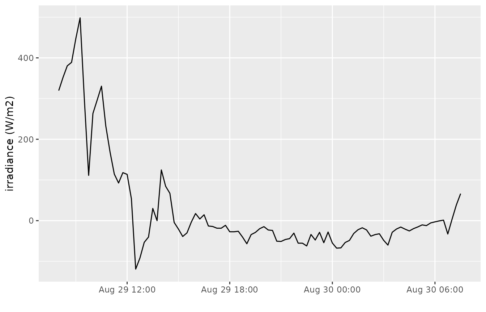
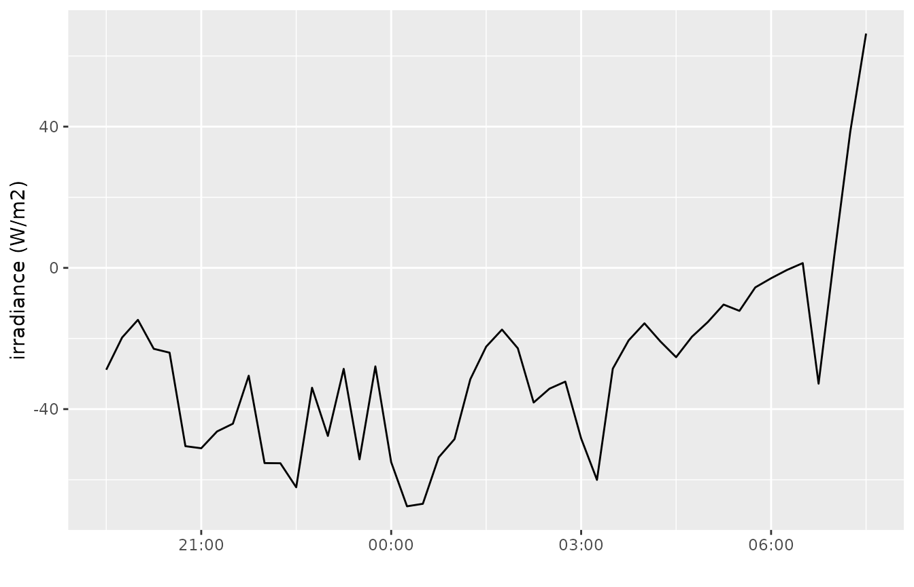
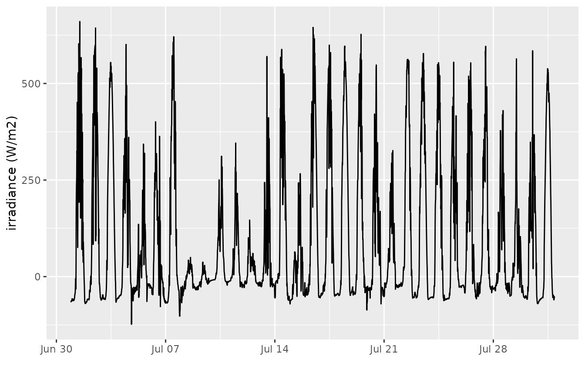
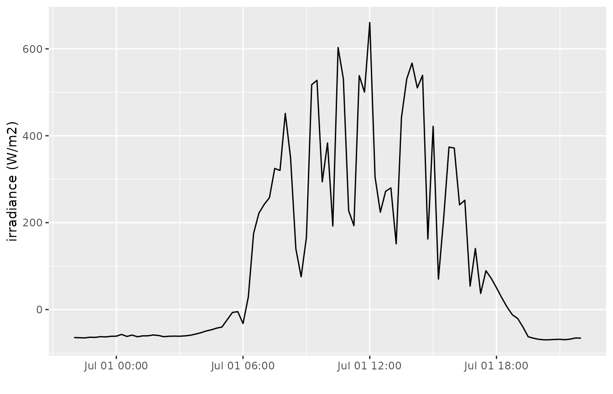

Define the date period to download
Stijn Van Hoey
2021-07-01
Source:vignettes/define_date_periods.Rmd
define_date_periods.RmdIntroduction
When downloading time series with the get_timeseries_tsid() method, the ts_id argument provides the link with the variable, location and frequency of the time series, but not the extent/period to download.
The time period to download is defined by a combination of the arguments from, to and period. The usage is similar with the VMM documentation for the API itself. The main difference is that the wateRinfo package uses existing R functions to interpret the date strings given by the user before sending these to the API (as a formatted string according to %Y-%m-%d %H:%M:%S).
This vignette aims to briefly explain how to define the arguments.
Which combinations?
In order to define a period, a start and end date is required. Defining all three will result in an error, but any combination of from/to, from/period and to/period is allowed. Moreover, if only period or from are defined, the waterinfo.be API will automatically define to as the current time. Hence, defining the last x days/months/years/… can be achieved by only using the period option.
How to define the from/to dates
The package will both except valid date strings as well as valid date objects (POSIXct, POSIXt) as input for the from and to arguments. When using a string value, it can be defined on different resolutions:
- “2017-01-01 11:00:00”
- “2017-01-01”
- “2017-01”
- “2017”
According to the lubridate package, these orders are accepted: ymd_hms, ymd, ym, y. As a result, also "2017/01/01", "2017 01 01" or "20170101" are valid date string inputs. Make sure the order of year-month-day is respected. For example, "01/01/2017", "01-01-2017" and "01-2017" are NOT valid.
How to define the period
The period string provides a flexible way to extract a time period starting (in combination with from) or ending (in combination with to) at a given moment. Moreover, by using only the period as argument, it will cover all cases where one is interested in the last x days/months/years/….
Some examples are:
-
P3D: period of three days -
P2Y: period of 2 years -
PT6H: period of 6 hours -
P2DT6H: period of 2 days and 6 hours - …
In general, the period string should be provided as P#Y#M#DT#H#M#S, where P defines Period (always required!) and each # is an integer value expressing the number of…. The codes define a specific time interval:
-
Y- years -
M- months -
D- days -
W- weeks -
H- hours -
M- minutes -
S- seconds
T is required if codes about sub-day resolution (day, minutes, hours) is part of the period string. Furthermore, D and W are mutually exclusive.
More examples of valid period strings are:
-
P1DT12H: period of 1 day and 12 hours -
P2WT12H: period of 2 weeks and 12 hours -
P1Y6M3DT4H20M30S: period of 1 year, six months, 3 days, 4 hours, 20 minutes and 30 seconds
Examples
When interested in irradiance (15min frequency) data, the following stations provide time series:
get_stations("irradiance")## ts_id station_latitude station_longitude station_id station_no
## 1 78879042 50.86149 3.411318 12209 ME05_019
## 2 78845042 51.27226 3.728299 12207 ME03_017
## 3 78947042 51.20300 5.439589 12213 ME11_002
## 4 78913042 50.73795 5.141976 12211 ME09_012
## 5 78896042 50.88663 4.094898 12210 ME07_006
## 6 78862042 51.24379 4.266912 12208 ME04_001
## 7 78930042 51.16224 4.845708 12212 ME10_011
## station_name stationparameter_name parametertype_name
## 1 Waregem_ME Rad Rn
## 2 Boekhoute_ME Rad Rn
## 3 Overpelt_ME Rad Rn
## 4 Niel-bij-St.-Truiden_ME Rad Rn
## 5 Liedekerke_ME Rad Rn
## 6 Melsele_ME Rad Rn
## 7 Herentals_ME Rad Rn
## ts_unitsymbol dataprovider
## 1 W/m² VMM
## 2 W/m² VMM
## 3 W/m² VMM
## 4 W/m² VMM
## 5 W/m² VMM
## 6 W/m² VMM
## 7 W/m² VMMFocusing on the data of Herentals, the ts_id to use is 78930042. We have different options to define the period to get data from:
- data about the last day, using
periodonly:
irr_lastday <- get_timeseries_tsid("78930042", period = "P1D")
ggplot(irr_lastday, aes(Timestamp, Value)) +
geom_line() + xlab("") + ylab("irradiance (W/m2)")
- data about the last 12 hours, 30 minutes, using
periodonly:
irr_lasthours <- get_timeseries_tsid("78930042", period = "PT12H30M")
ggplot(irr_lasthours, aes(Timestamp, Value)) +
geom_line() + xlab("") + ylab("irradiance (W/m2)")
- historical data from July till August 2014, using
fromandtoon month level
irr_2014 <- get_timeseries_tsid("78930042",
from = "2014-07-01",
to = "2014-08-01")
ggplot(irr_2014, aes(Timestamp, Value)) +
geom_line() + xlab("") + ylab("irradiance (W/m2)")
- historical data for one day from July 1st 2014, using
fromandperiod
irr_2014day <- get_timeseries_tsid("78930042",
from = "2014-07-01",
period = "P1D")
ggplot(irr_2014day, aes(Timestamp, Value)) +
geom_line() + xlab("") + ylab("irradiance (W/m2)")